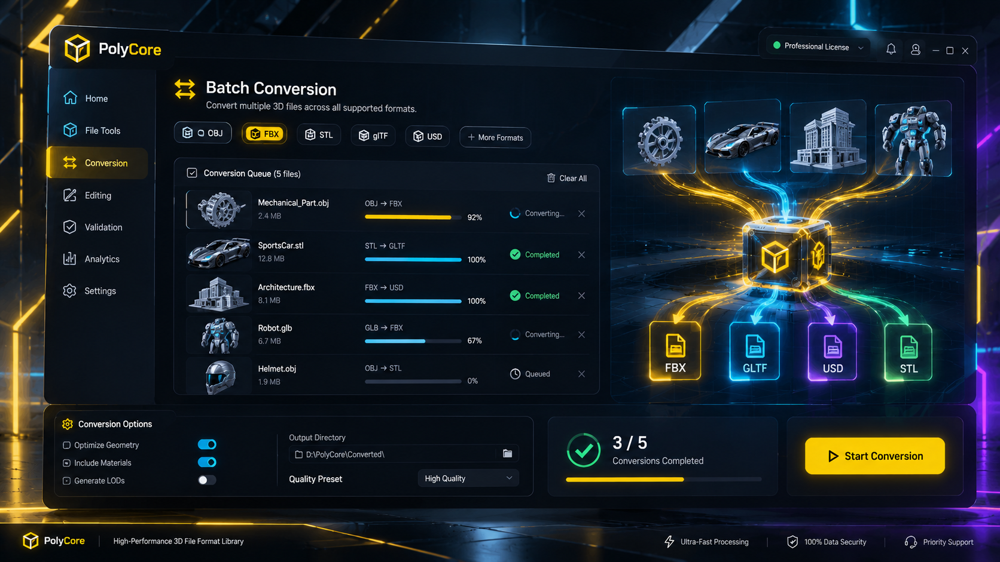
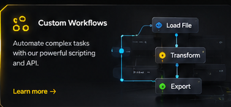

Mesh & Scene Editing
Inspect geometry, scene hierarchy, transforms, materials and metadata. Proposed operations include mesh repair, selection and primitive editing.
Format coverage →A modular feature set, from file access and inspection to conversion, optimization and production automation. Every item below is a proposed capability, not a shipped feature.
Use the visual tour to explore the planned workflow. These are product concept illustrations, not screenshots from a released application.
See the architecture ↗
Inspect geometry, scene hierarchy, transforms, materials and metadata. Proposed operations include mesh repair, selection and primitive editing.
Format coverage →
Profile-based conversions with explicit options for scale, axis, materials, textures, animation and metadata preservation.
Explore formats →
Proposed decimation, mesh merging, texture compression, LOD generation and validation presets.

Queue-based processing, watch folders, scripting hooks, reusable jobs and machine-readable reports.

Profiling, memory diagnostics, processing metrics and reproducible benchmark harnesses.

Proposed offline deployment, policy controls, SDK licensing, custom adapters and support packages.
The design goal is a stable internal scene representation so application code does not need format-specific branches for every common operation.
Read/write coverage and advanced data support are tracked separately.